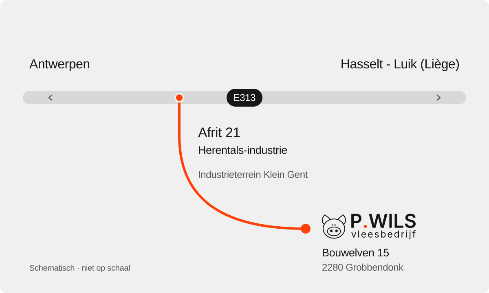

De wegnaar Wils.
Bouwelven 15, 2280 Grobbendonk
Industrieterrein Klein Gent

Open navigatie
Levering of afhaling? Bespreek uw aankomst met logistiek via +32 14 23 38 35.
Bouwelven 15, 2280 Grobbendonk
Industrieterrein Klein Gent

Levering of afhaling? Bespreek uw aankomst met logistiek via +32 14 23 38 35.